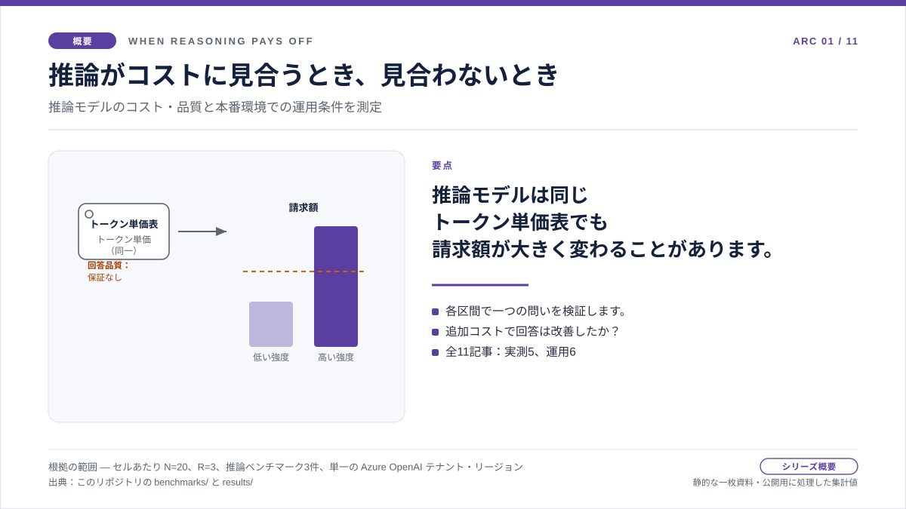

概要：推論強度、品質、コスト
推論がコストに見合うとき：同じトークン単価、異なる請求額
あるチームが推論モデルを導入し、トークン単価表は以前と同じだと確認します。 ところが設定には、新たに推論強度という項目があります。少し長く考えるための コストがほぼ無視できるなら、どの場面でも回答がよくなるはずだと考え、強度を 上げたくなるのは自然です。しかし、推論モデルは同じ単価表を使っていても、 請求額が大きく変わることがあります。強度を上げるとモデル内部で生成される トークンが増え、利用量として課金される一方、応答本文には表示されないためです。 問うべきなのは「推論は高価か」ではなく、「強度を上げると、どこで回答が改善し、 どこでは見えない計算だけが増えるのか」です。このシリーズでは、その問いを データで検証します。
この直感を検証した理由
推論モデルへ移行すると、設定には推論強度が現れる一方、トークン単価は 変わらないように見えます。そのため強度を上げることは、誤答に備える 安価な保険のように思えます。すべての処理で強度を上げたくなるのは もっともですが、追加の計算が回答を改善するのか、請求額にだけ反映されるのかは わかりません。
各測定区間で検証する仮説は明快です。推論強度を上げると回答がよくなるのか、 それとも見えないトークン、レイテンシ、コストが増えるだけなのか。直感に従って 高い強度を既定値にすれば、最終的な出力が変わらなくてもコストは発生します。 一方、先に測定すれば、対応する品質指標が実際に改善した区間だけ強度を上げ、 それ以外では低く保てます。
そこで、プロンプトとワークロード区間を固定し、短い事実回答、複数ステップの 推論、ツール利用エージェントの三つの区間に同じ強度設定を順に適用して、 トークン構成、レイテンシ、コストを測定しました。さらに、測定したトークン構成を PTU/PAYG の容量計画モデルに組み込みました。結果は区間ごとに異なります。 短い事実回答では、強度を上げても回答は改善せず、コストと推論トークンも ほぼ横ばいでした。トークン構成を見ると、表示される出力がほぼ同じでも請求額が 変わり得る理由がわかります。複数ステップの処理では、評価スコアが実際に 動いた場合にだけ効果がありました。ツール利用エージェントでは品質が頭打ちになり、 強度をさらに上げてもレイテンシだけが増えるケースがよく見られました。 PTU/PAYG の交点は実測した容量ではなく、 モデル化した計画上のしきい値です。以下ではトピック別のチャートを順に説明し、 根拠ダッシュボードをすべての数値の監査証跡として示します。

問い
推論強度を上げると、どこで測定可能な品質向上につながり、どこでは見えない計算だけが増えるのでしょうか。
根拠
公開チャートデータで、コスト、評価スコア、トークン構成、レイテンシ、モデル化した予約容量の交点を比較します。
結果
短い事実回答の測定区間では、すべての推論強度でコストはほぼ横ばいでした（gpt-5.2 の各強度はいずれも gpt-4o の baseline 未満です）。平均評価スコアは約 1.95 で、baseline 以上を維持しました。評価スコアが実際に動いたのは複数ステップの区間で、1.5 から 2.0 に上がりました。
判断
評価スコアが意味のある幅で改善する区間だけ推論強度を上げます。根拠ダッシュボードは、記事の監査証跡として維持します。
シリーズの読み方：三つの層と橋渡し
三つの層で読み解く
読み方：棒、軸、表
チャートの読み方
この記事の小さな棒グラフは、元チャートを読むためのガイドです。 頻度分布を表すヒストグラムではありません。各棒は、baseline、none、low、medium、high、xhigh という強度設定ごとの集計値です。
X 軸
X 軸は、運用者が調整できる推論強度です。左から右へ進むほど、モデルに多くの内部推論を許可します。
Y 軸
Y 軸の指標はチャートごとに異なります。コストはリクエストあたりの USD、品質は評価スコア、レイテンシはミリ秒、トークン構成はトークン数、交点はモデル化した毎分リクエスト数です。
棒
棒は高ければよいとは限りません。品質では高いほどよい場合がありますが、コスト、レイテンシ、推論トークンの増加には、それに見合う品質向上が必要です。
元データ
正確な値、標準偏差、サンプル数はダッシュボードの表で確認できます。本文では、意思決定に必要な傾向だけを取り上げます。
トピック：短い事実回答
短い事実回答：推論がコストに見合わない場合
results/cost-curves/benchmark-01-cost-per-request.csvから
取得しました。対応する品質チャートと正確な表は
根拠ダッシュボードで確認できます
（ローカルのチャートデータ）。

棒グラフの読み方
X 軸は推論強度です。コストチャートの Y 軸はリクエストあたりの平均 USD、 対応する品質チャートの Y 軸は平均評価スコアです。つまり、強度を上げた結果、 スコアが上がったのか、請求額だけが増えたのかを確認します。
確認する理由
移行時に起きやすい単純な落とし穴を検証します。処理の大半が短い事実回答なのに、 推論強度を一律に上げたあとで請求額が変わった場合です。
チャートが示すこと
短い事実回答の区間では、none がリクエストあたり平均 $0.000587、 xhigh が $0.000598 でした。差は 1.02x にすぎず、ほぼ横ばいです。 どちらも gpt-4o の baseline $0.000665 を下回りました。平均評価スコアは 約 1.95 で、baseline の 1.90 以上を維持しました。
運用上のポイント
推論強度を上げても、回答が改善するとは限りません。短い事実回答では 最も低い強度から始め、品質ゲートで実測の改善を確認できた場合だけ上げます。
トピック：見えない課金構造
請求額の差を生む推論トークン
確認する理由
応答本文がほぼ同じでも、モデルが回答を生成するために多くの内部推論トークンを 使っている場合があります。出力長だけを見ると、この課金対象の処理を見落とします。
チャートが示すこと
短い事実回答の区間では、推論トークンはどの強度でもゼロ付近にとどまります。 none では 0、high でも約 1.35 であるため、請求額は横ばいです。 一方、複数ステップの区間では見えない増加が現れます。推論トークンが強度とともに 増え、回答本文からはわからないコスト差を生みます。
運用上のポイント
応答テキストだけでは、この差はわかりません。運用予算では、入力、キャッシュ済み入力、 出力、推論トークンに分けて利用量を把握する必要があります。
トピック：複数ステップの推論
複数ステップ：モデル変更で品質が向上した場合
対照例として見る理由
このワークロードでは、gpt-4o から gpt-5.2 へのモデル変更で品質が 向上しました。ただし gpt-5.2 内では、強度を上げても品質は改善していません。
チャートが示すこと
複数ステップの区間では、gpt-4o の baseline は 1.5 点でした。 gpt-5.2 は none の時点で 2.0 点に達し、high も 2.0 点でした。 none は、同じ最高スコアをより低いリクエスト単価で得ています。
運用上のポイント
まずモデルと推論強度の組み合わせごとに品質を確認します。同じ品質なら、 最も低コストでレイテンシの短い設定を選びます。
トピック：ツール利用エージェント
ツール利用エージェント：頭打ちを見極める
頭打ちを確認する理由
ツール利用エージェントには、より多くの推論が必要に見えることがあります。 しかし、難しい処理をすでにツール呼び出しが担っている場合もあります。
チャートが示すこと
benchmark-03 のツール利用エージェント区間では、評価スコアがすでに ルーブリックの上限に達しています。強度を上げてもスコアは伸びず、主に 内部トークンとレイテンシだけが増えます。この場合、推論品質はもはや ボトルネックではありません。
運用上のポイント
推論強度は既定値ではなく、統制された実験として扱います。エージェント型の 処理では、ボトルネックが推論品質、ツール選択、ツールのレイテンシ、 オーケストレーションのどこにあるかを先に確認します。
トピック：容量計画
PTU/PAYG の交点：実測ではなく計画モデル
計画に必要な理由
PAYG と予約容量では、判断基準が異なります。このチャートでは、 推論を含むトークン構成を計画上のしきい値に換算します。
チャートが示すこと
短い事実回答の xhigh 行では、PTU/PAYG の交点は 50 PTU の下限を 前提とした約 2748 rpm という、モデル化した仮説です。実測した PTU スループットではありません。
運用上のポイント
この数値は容量の根拠ではなく、計画上のしきい値として扱います。PAYG では 推論トークンを減らすと変動費が下がります。PTU では、同じ削減によって 固定予約内で処理できるリクエスト数が増える可能性があります。
橋渡し：測定結果から運用へ
測定からプロダクションへ
測定の記事では、推論強度を上げた結果、どこで品質が改善し、どこでは 見えない計算だけが増えるのかを検証しました。運用の記事で扱う問いは 異なります。推論強度を決め、トラフィックが流れ始めたあと、デプロイは 運用者に何を返すべきでしょうか。橋渡しの記事では、測定と運用で記述の 視点が変わる理由と、そのまま引き継ぐ検証手法を説明します。
運用：プロダクション
検証手法を運用へつなぐ
この概要では、推論強度がコストと品質を変える条件を説明しました。
運用の記事では、同じ検証手法をより実務に近いテーマへ適用します。
retry-after-ms に従う 429 からの復旧、
prompt_cache_key のバケット化、明示的なキャッシュ保持、
GPT-4o から GPT-5.x への移行時のサイジングです。
各記事は、公開チャート、公式仕様の引用、文書化された動作と 運用上の推論の境界を明示してから公開します。
429 からの復旧を読む キャッシュキーの記事を読む キャッシュ保持の記事を読む 移行サイジングの記事を読む すべての記事を見る
出典：根拠の範囲
出典と根拠の範囲
この概要では、五つの区間のコスト、品質、レイテンシ、トークン構成を 併せて確認します。上記の数値はすべて、このリポジトリの公開成果物まで 追跡できます。運用上の解釈は、この記事で提示したものです。以下の二つの Tier で、文書化された仕様と運用上の解釈の境界を示します。
- [1] Tier 1：方法論： このリポジトリの
docs/05-methodology.md（v1.0）。セルあたり N = 20 の作成サンプル、R = 3 の反復、公開された集計区間のみを対象とします。チャートの解釈はこの固定条件を前提とし、N = 20 で p 値は主張しません。 - [2] Tier 1：PAYG 価格スナップショット： PAYG コスト（リクエストあたりの平均 USD）は、このリポジトリの
pricing/azure-openai-payg-2026-05.yamlを基に算出しています。出典：Azure OpenAI の価格ページ（2026-05-19 閲覧）、アーカイブ。定価が変われば比率も変わります。 - [3] Tier 1：PTU 価格スナップショット： PTU のモデル化した交点と 50 PTU の下限には、このリポジトリの
pricing/azure-openai-ptu-2026-05.yamlに記録された値を使用しています。出典：Microsoft Learn ドキュメント（2026-05-19 閲覧）、アーカイブ。1 PTU・1時間あたりの単価または PAYG のトークン単価が変われば、交点も移動します。 - [4] Tier 2：短い事実回答の区間測定： このリポジトリの
benchmarks/01-short-factual/analysis.json。リクエストあたりのコストは $0.000587 から $0.000598 でほぼ横ばいであり、すべて gpt-4o の baseline $0.000665 を下回ります。平均評価スコアは gpt-4o の 1.9 に対して gpt-5.2 の none が 1.95、推論トークンは none の 0.0 から high の 1.35 までで、ほぼゼロです。 - [5] Tier 2：複数ステップの区間測定： このリポジトリの
benchmarks/02-multi-step-reasoning/analysis.json。gpt-4o baseline の 1.5 点、gpt-5.2 none の 2.0 点（リクエストあたり $0.000618）、high の 2.0 点（$0.00125）の出典です。 - [6] Tier 2：ツール利用エージェントの区間測定： このリポジトリの
benchmarks/03-tool-using-agent/analysis.json。ツール利用エージェントのセクションで示した、品質が頭打ちになる棒グラフの出典です。 - [7] Tier 2：モデル化した交点： 短い事実回答の xhigh 行における、50 PTU の下限を基準とした約 2748 rpm は、実測したトークン構成を使った計画上の計算です。実測した PTU スループットではありません。容量の根拠ではなく、サイジングの目安として扱います。モデル化の成果物：
docs/blog/data/chart-data/ptu-payg-crossover/benchmark-01/crossover.json。 - [8] 根拠ダッシュボード： 根拠ダッシュボードにある記事別の表とレンダリング済みの元チャートで、同じ成果物を検証できます。
この概要は、今回のベンチマークサンプルにおける五つの区間の傾向を示します。 別のワークロード構成、テナント、リージョン、将来の価格スナップショットでも 同じ傾向が続くことは証明しません。各トピック記事では、その区間に固有の 根拠の範囲も示します。
根拠から言えること
この概要では、五つの区間でモデルと推論強度の組み合わせがコスト、品質、 レイテンシ、トークン構成をどう変えるかを併せて確認しました。追加支出に 価値があるのは、実際に回答が改善する場合だけです。
実務上のルール
- 短い事実回答では、低い推論強度を既定値にします。
- 複数ステップの処理では、モデルと推論強度の組み合わせを比較し、同じ品質なら最も低コストの設定を選びます。
- ツール利用エージェントでは、推論強度をさらに上げる前に頭打ちを確認します。
- すべてのコスト評価を、対応する品質、レイテンシ、トークンのチャートと併せて確認します。
実務上のルール：このワークロードでは、評価スコアの実測値が改善する区間だけ 推論強度を上げます。本番環境へ反映する前に、すべてのコスト評価を、対応する 品質、レイテンシ、トークンのチャートと併せて確認します。
根拠ダッシュボードはこのルールの監査証跡であり、各トピック記事には 区間ごとの適用方法を示しています。
次の記事： 短い事実回答：推論がコストに見合わない場合。処理の大半が短い事実回答なら、推論強度を上げることで請求額に見合う品質向上が得られるのでしょうか。